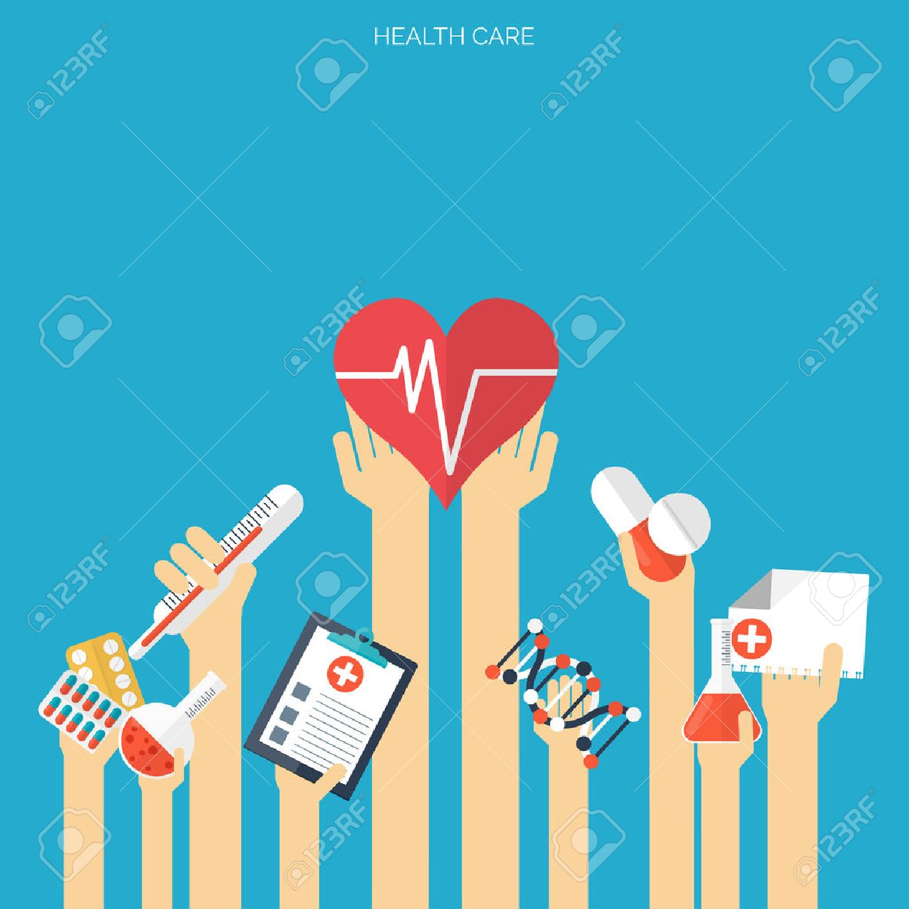
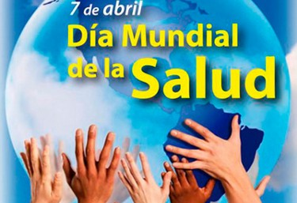

Día Mundial de la Salud 7 de Abril.
Infografia.

Cobertura sanitaria universal
La cobertura sanitaria universal es el objetivo primordial de la OMS. Para lograrlo es crucial que todas las personas puedan tener la atención que necesitan, cuandoquiera que la necesiten, en el seno mismo de la comunidad.
Se está avanzando en este ámbito en países de todas las regiones del mundo.
Sin embargo, millones de personas siguen sin acceso alguno a la atención de salud. Y muchas personas, que se cuentan también por millones, se ven obligadas a elegir entre la atención de salud y otros gastos cotidianos, como alimentos, vestidos o incluso un techo.
Por esa razón la OMS dedica este año el Día Mundial de la Salud, el 7 de abril, a la cobertura sanitaria universal.

-
1.-¿Cuando se celebra y por qué?
-
2.-¿Que se trata de conseguir con la campaña?
-
3.- ¿Qué hace la OMS?
-
4.- Cobertura Sanitaria Universal
-
5.- ¿Qué es lo que NO incluye la cobertura sanitaria universal?

 5
5 10
10